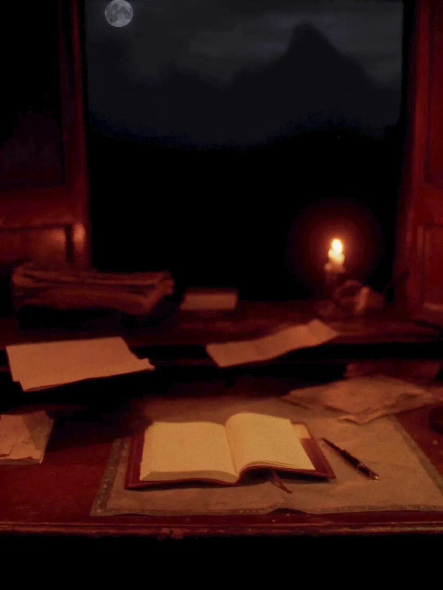
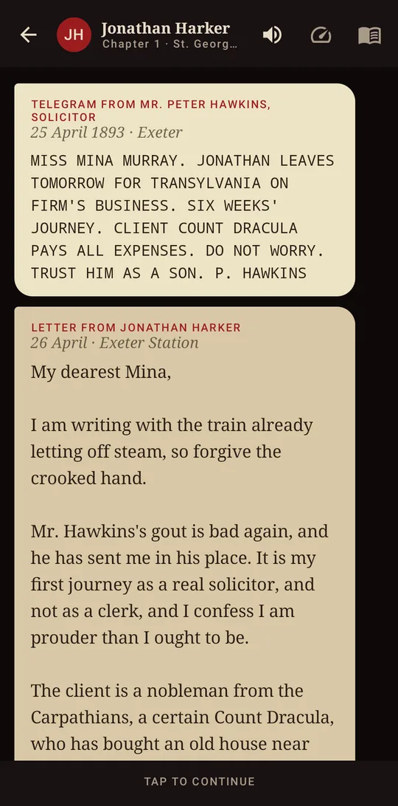
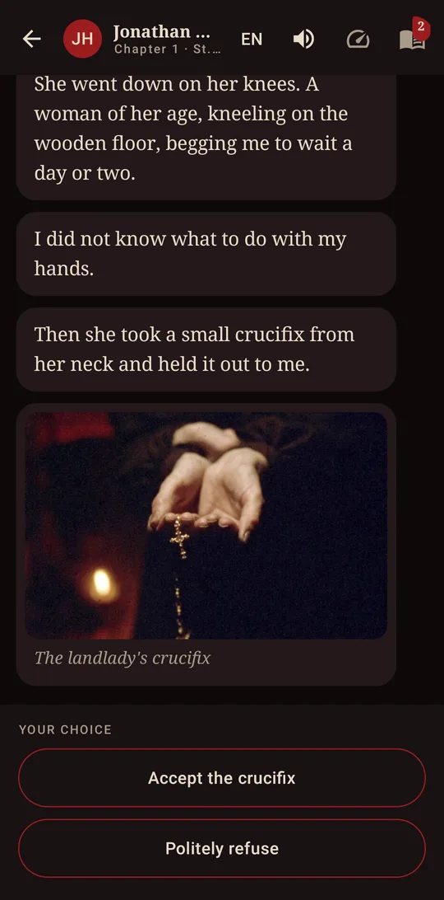
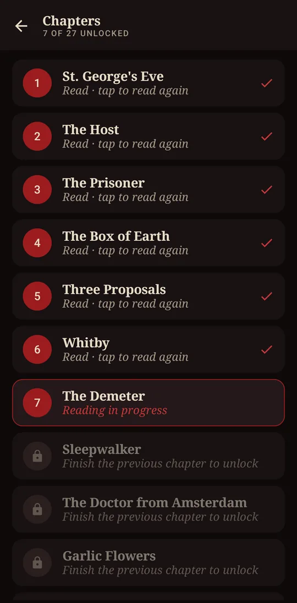
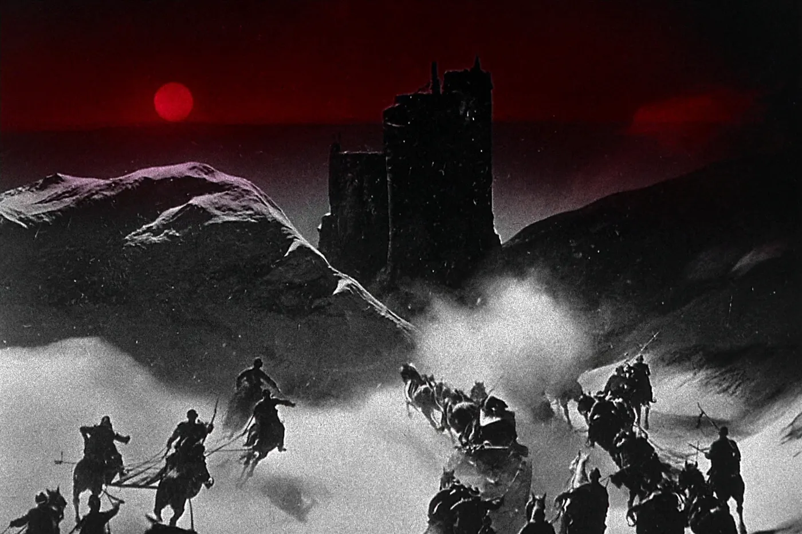

1893 · EXETER
It arrives as messages
Jonathan's journal, Mina's letters, telegrams and newspaper clippings arrive one by one, at the pace you choose. Stoker wrote the novel this way; here it fits in your phone.

ST. GEORGE'S EVE
The choice is yours
The landlady begs you not to go up to the castle and holds out a crucifix. Accept or refuse? At some moments you decide what Jonathan does, and uncover scenes you would otherwise miss.

FROM THE CARPATHIANS TO WHITBY
27 chapters, with sound and art
A haunting piano score, illustrated scenes and clues to collect in Mina's notebook. The first chapter is free; one purchase unlocks the whole book. No ads.


“Listen to them. The children of the night. What music they make!”Count Dracula
Chapter 1 is free
Get it on Google Play